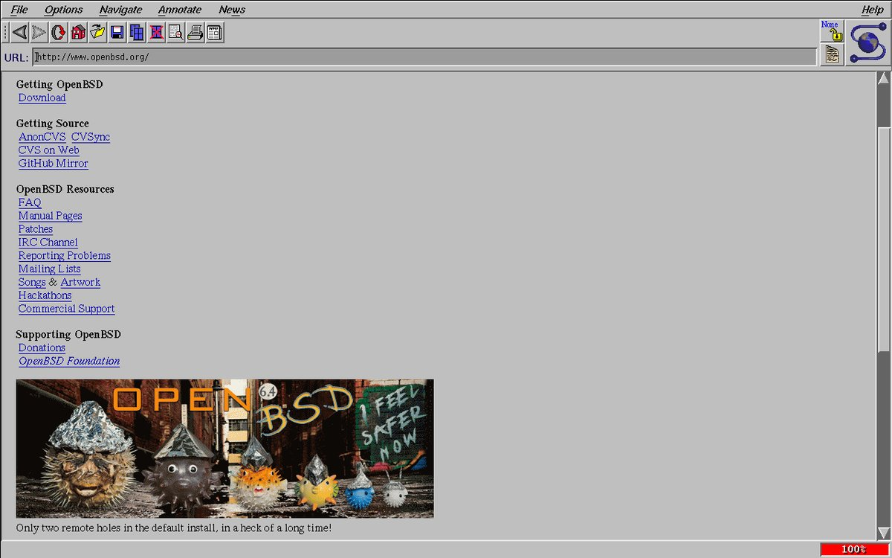
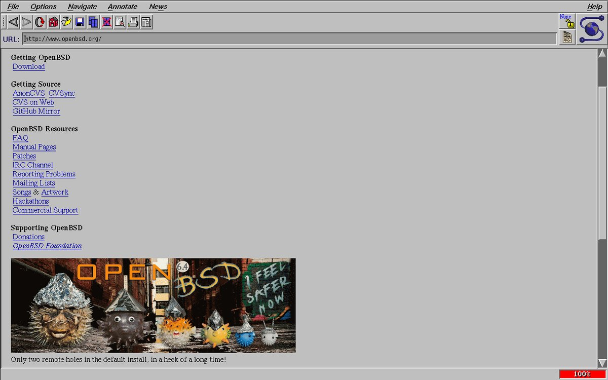
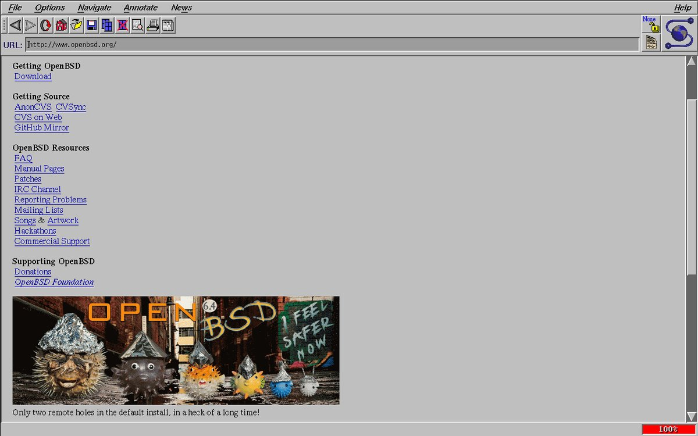

Navigation: ${HOME} /rss.xml Github Twitter
A classic web browser, now available on OpenBSD
Added OpenBSD support and upgraded the archaic libpng code so you too can enjoy this historic web browser. NCSA’s site causes a coredump, so run the binary with another URL as an argument. It’s not great as a browser on the modern web, but it does make a great gopher client!
Now using Cameron Kaiser’s patches and alternative (‘modern’) renderer. This needs a serious code audit before even considering submitting to ports.
$ git clone https://github.com/0x16h/mosaic-CK-openbsd
$ doas pkg_add motif
$ cd mosaic-CK-openbsd && make openbsd
$ src/Mosaic gopher://gopher.club

Navigation: ${HOME}
~
© 2003-2022 Cryogenix | Powered by OpenBSD at High5! | Built with ssg